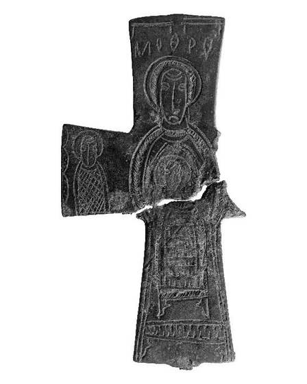

Catalog › CE-0299 · HPM2023-11
Valvă izolată de bronz (revers), cat. 11, Muzeul Halûk Perk
sec. XI (1001–1100) · loc necunoscut · Muzeul Halûk Perk (Halûk Perk Müzesi), Istanbul, Turcia, inv. HPM 16193
single valve of a reliquary cross, bronz; c. XI (1001–1100); find spot unknown; kept at Muzeul Halûk Perk (Halûk Perk Müzesi), Istanbul, Turcia.


Identificare
- Categorie
- Valvă izolată
- Material
- Bronz
- Tehnică
- Gravare (incizie)
- Stare
- Fragmentară
- Dimensiuni
- Gr 5 mm
Iconografie
- Revers
- Maica Domnului cu Pruncul; Neidentificat
- Descriere revers
- Maica Domnului în picioare, în întreaga înălțime, din față, cu mâinile în jurul capului Pruncului, care e în întreaga înălțime la nivelul pieptului; pe brațul orizontal stâng un personaj cu nimb, în jumătate de înălțime, din față, a cărui identitate nu e dată în nicio inscripție; autorii se așteaptă la o reprezentare asemănătoare pe brațul drept, rupt; deasupra capului inscripția cu literele greșit așezate.
- Inscripții
- MI ΘPV (citit; forma așteptată MP ΘV [Μ(ήτή)ρ Θ(εο)ύ])
- Limba
- Greacă
Datare și atribuire
- Datare
- sec. XI (1001–1100)
- Centru
- Necunoscut
- Tipologie
- Pitarakis 2006, forma tip I; Ünal–Çakmakçı 2023, tip 3
Descoperire
- Context
- Colecție (fără context)
- Coordonate
- 41.0565° N, 29.0506° E
- Precizia locului
- Loc de păstrare (loc de descoperire incert)
Păstrare și referințe
- Colecție
- Muzeul Halûk Perk (Halûk Perk Müzesi), Istanbul, Turcia
- Nr. inventar
- HPM 16193
- Bibliografie
- C. Ünal, Z. Çakmakçı, Halûk Perk Müzesi’nden Meryem ve Çocuk İsa Betimli Bir Grup Röliker Haçın İkonografik Bakımdan Değerlendirilmesi, „Art-Sanat”, 20, 2023, p. 667–701 [Ünal–Çakmakçı 2023], p. 693, cat. nr. 11, reprodusă la G. 11 (p. 693). DOI: 10.26650/artsanat.2023.20.1289947. Acces liber (CC BY-NC 4.0).
- Figura
- G. 11
- Planșe
- Ünal–Çakmakçı 2023, p. 693
- Analogii
- Pitarakis 2006, cat. 299, 300, 367, 372; Peskova–Strokova 2012, p. 74–76, cat. 8
- Observații
- Datare după Ünal și Çakmakçı: sec. XI. Dimensiuni date în sursă (cm): înălțime cu balamalele -, înălțimea crucii 9, lățime -, grosime 0.5. Capacul din față lipsește; capacul din spate e rupt de la începutul brațului de jos, iar brațul drept și balamalele de legătură lipsesc. Înălțimea totală și lățimea nu sunt date în sursă. Locul descoperirii nu e cunoscut cu precizie; punctul de pe hartă marchează locul de păstrare (Muzeul Halûk Perk), nu locul descoperirii. Coordonate: nu sunt date în sursă.
Citare: Corpus Encolpiorum, CE-0299, Valvă izolată de bronz (revers), cat. 11, Muzeul Halûk Perk, --root/piese/HPM2023-11/ (accesat 2026-10-20).